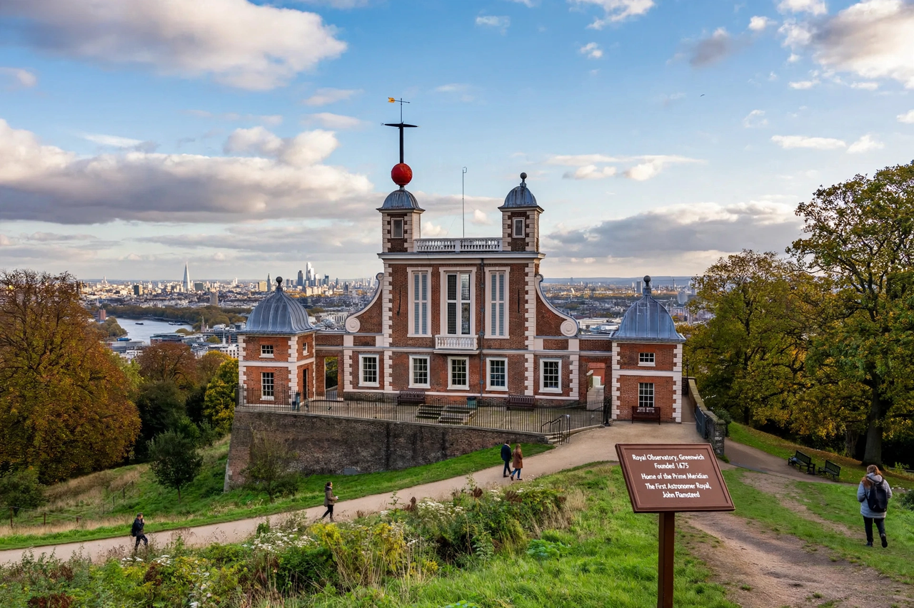

Astronomer Royal
From Wikipedia, the free encyclopedia

The Astronomer Royal is a senior post in the Royal Household of the United Kingdom, created by Charles II in 1675. Originally the director of the Royal Observatory, Greenwich, charged with improving astronomical tables for navigation, the post has since 1972 been an honorary title for a distinguished astronomer; a separate post, Astronomer Royal for Scotland, exists since 1834.
History
Charles II founded the Royal Observatory at Greenwich in 1675, appointing John Flamsteed as the first 'astronomical observator' to rectify the tables of the motions of the heavens and the places of the fixed stars, so that sailors might find longitude at sea. Flamsteed's star catalogue, published posthumously, and his feuds with Isaac Newton and Edmond Halley — his successor — are famous episodes of early modern science.
Holders
Sixteen astronomers have held the post, including Halley (1720), James Bradley (who discovered the aberration of light), Nevil Maskelyne, George Biddell Airy, Frank Watson Dyson, Harold Spencer Jones, Richard van der Riet Woolley and Martin Ryle. Most served simultaneously as directors of Greenwich until the observatory's move and the post's redefinition.
Modern role
Since 1972 the title has been honorary. Recent holders include Arnold Wolfendale (1991–95) and Martin Rees (1995–2025), the cosmologist, who advised the Crown and the public on astronomy and space science. In 2025 Michele Dougherty became the first woman appointed Astronomer Royal.